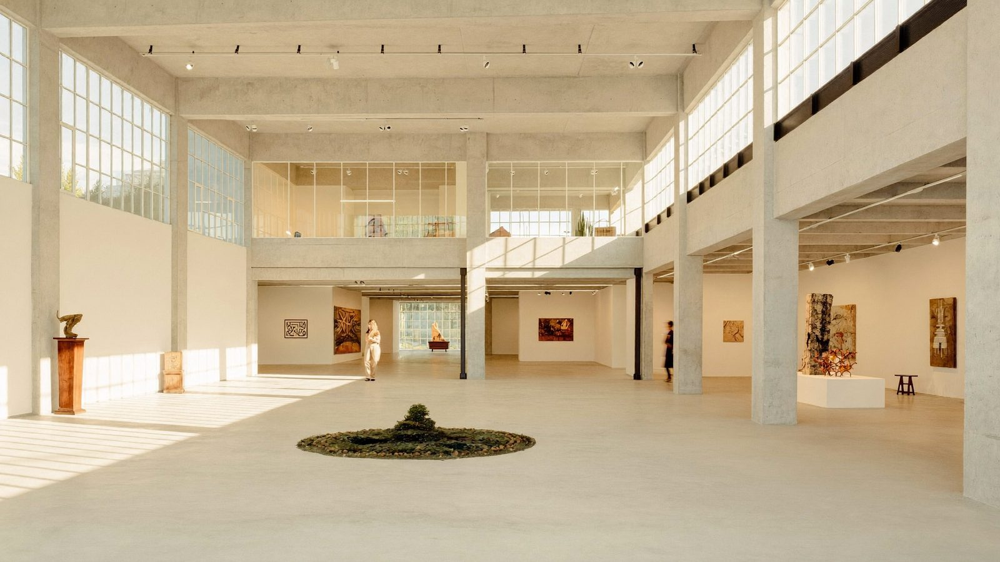

מוזיאון חדש לגמרי נפתח במזרח לונדון, והכניסה חינם
ב 18 באפריל 2026 נפתח לקהל V&A East Museum, מוזיאון חדש לגמרי ברובע האולימפי בסטרטפורד. הוא חלק ממשפחת מוזיאוני ויקטוריה ואלברט, אותה משפחה שאליה שייך המוזיאון הגדול והמוכר בסאות׳ קנזינגטון.
הכניסה חינם. חלק מהתערוכות והאירועים גובים תשלום נפרד, אבל המוזיאון עצמו פתוח לכולם בלי כרטיס ובלי הזמנה מראש.
שעות פתיחה וכתובת
- כל יום מעשר בבוקר עד שש בערב
- בימי חמישי ושבת עד עשר בלילה
- הכתובת: 107 Carpenters Rd, Queen Elizabeth Olympic Park, Stratford, London E20 2AR
- התחנה הקרובה היא סטרטפורד, כרבע שעה עד עשרים דקות הליכה
למה זה מעניין למי שטס עכשיו
מוזיאון גדול וחינמי שנפתח ב 18 באפריל 2026 הוא תוספת שימושית במיוחד למזרח לונדון, וברוב המדריכים לישראלים הוא עדיין לא מופיע. סטרטפורד נגישה בקלות ממרכז לונדון בקו אליזבת ובקו הסנטרל, ובאותו מתחם נמצא גם מרכז קניות גדול, כך שאפשר לבנות מהביקור חצי יום שלם.
שעות הפתיחה הארוכות בחמישי ובשבת שוות במיוחד, כי הן מאפשרות לשלב את המוזיאון בערב ולא לשרוף עליו שעות יום.
שווה לדעת: באתר הרשמי מצוין שייתכן תור בכניסה. הגעה בשעות הבוקר המוקדמות או בערב של חמישי ושבת נוחה יותר.
לכתבה המלאה